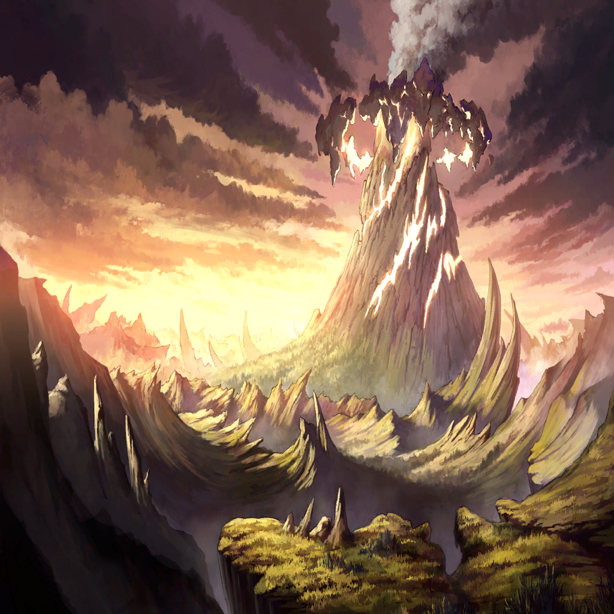

|
 |
| クェンス |
…文献が、全然残ってねえ
まさか、この層の連中は
記録を残すって習慣がないのか？ |
| クェンス |
こりゃ、地道に聞き込みするしかねえな
まあ、年寄りの話を聞くのは得意だけどよ |
| ローレアム |
おや、クェンス君 |
| クェンス |
ローレアム？
忙しく方々を飛び回ってるアンタが
こんなところにいるなんて珍しいな |
| ローレアム |
いやぁ、聞いてるよ
町の人々に評判じゃないか
よ、色男！ |
| クェンス |
顔の良し悪しで
評価されてるんじゃないけどな！ |
| クェンス |
っと、そうだ
なあ、ローレアム。この辺に、昔のことに
詳しい爺様とか、文献とかないか？ |
| クェンス |
なんなら古い日記でもいいんだが |
| ローレアム |
うん？ 調べものかい？
それなら向こうの青い屋根に
我が町の生き字引が―― |
| クェンス |
…っ、なんだ!?
地面が揺れ、た？ |
| ローレアム |
…これは、そんな… |
| クェンス |
おい、何が起こってる？
この揺れは一体… |
| クェンス |
…なんだ、ありゃ |
|  |
| クェンス |
山が、火を噴いてる…？ |
|
| ローレアム |
噴火だ…それもかなり大きい
地熱の荒ぶりは、リンドレイク様が
抑えているはずなのに… |
| クェンス |
なんだって!? |
| クェンス |
（ザフィリスが何か、しくじったか？
クソッ、今からあの山に登るのは、
さすがに…） |
| 憤怒の民Ａ |
…怒りだ |
| クェンス |
…え？ |
| 憤怒の民Ａ |
竜の、導きの――
リンドレイク様のお怒りだ！ |
| 憤怒の民Ｂ |
わ、私たちが、
掟を守れなかったから…？
だから天罰が下ったの!? |
| 憤怒の民Ｃ |
だ、誰だ。誰だ！
誰が怒りに身を任せた!? |
| 憤怒の民たち |
誰が。誰が。誰が。誰が!! |
| ローレアム |
まずい…！
みんな、落ち着いて！
自分の姿を顧みるんだ！ |
| ローレアム |
怒りは私たちにとっての禁忌だ
身を委ねれば、
穢れがその身に追いつくぞ!! |
| クェンス |
なん、だと…？ |
| 憤怒の民たち |
ぁ、あぁ、あああああ!! |
| クェンス |
これは、
色欲の層で起こったあれと同じ… |
| クェンス |
クソ…っ！ |
| ローレアム |
…クェンス君！ |
| クェンス |
なんだよ！
撃つなとは言うなよ？
放っておけば被害が増える |
| ローレアム |
わかっている！
でもまずは、無事な人々の避難を優先だ |
| クェンス |
…チッ、その通りだな
住民にはアンタが声をかけろ
俺は支援に徹する！ |
| ローレアム |
ああ、助かる…！ |
| クェンス |
クソッ、ザフィリス…！
悪いがそっちは頼んだぞ…！ |